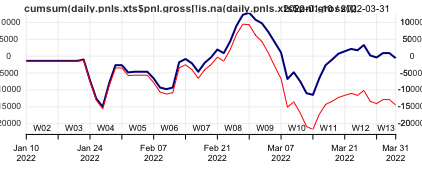
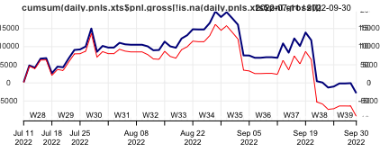
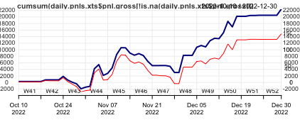
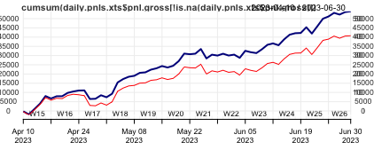
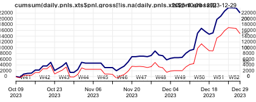
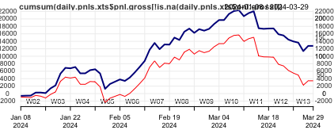
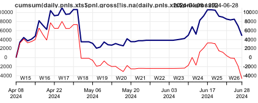

HFT 2025
Approaches undertaken
Group 1
We used different SMA with entry/exit based on double volatility breakout using mean reverting strategies. The parameters in term of fast and slow moving averages we tried 60, 90, 120, 150 etc with various upper and lower rolling sds to define entry and entry. But we did not found the SR ration and net PnL very interesting.
Second strategy we tried based on pair trading using average closing price spread and sds of returns based spread. In this additionally first week of each quarter we used to iterate over various values of m, volat.sd for both types of spread and calculated the best parameters based on highest SR ratio. We did this for each week and moved the time frame to next week. So first week generally there is no trade and following weeks based on last week best parameters pair trading was performed.
Finally selected strategy for group 1
Finally for group 1 we selected pair trading with previous weeks best parameters used for running week.
Group 1 - 2022 first quarter results
| gross SR | net SR | gross CR | net CR | gross cumP&L | net cumP&L | av.ntrades |
|---|---|---|---|---|---|---|
| -0.05446243 | -1.335636 | -0.1013886 | -1.978189 | -577.28 | -14452.74 | 4.644068 |

Group 1 - 2022 third quarter results
| gross SR | net SR | gross CR | net CR | gross cumP&L | net cumP&L | av.ntrades |
|---|---|---|---|---|---|---|
| -0.2735316 | -0.8866143 | -0.5287689 | -1.530431 | -2837.795 | -9247.564 | 2.166667 |

Group 1 - 2022 fourth quarter results
| gross SR | net SR | gross CR | net CR | gross cumP&L | net cumP&L | av.ntrades |
|---|---|---|---|---|---|---|
| 3.779882 | 2.572602 | 12.44741 | 7.09879 | 22419.65 | 14865.49 | 2.666667 |

Group 1 - 2023 Second quarter results
| gross SR | net SR | gross CR | net CR | gross cumP&L | net cumP&L | av.ntrades |
|---|---|---|---|---|---|---|
| 6.971348 | 5.2925 | 44.56767 | 27.48605 | 53970.73 | 40750.74 | 4.3 |

Group 1 - 2023 fourth quarter results
| gross SR | net SR | gross CR | net CR | gross cumP&L | net cumP&L | av.ntrades |
|---|---|---|---|---|---|---|
| 4.22906 | 2.896901 | 27.14227 | 14.41213 | -2837.795 | 22088.17 | 2.271186 |

Group 1 - 2024 first quarter results
| gross SR | net SR | gross CR | net CR | gross cumP&L | net cumP&L | av.ntrades |
|---|---|---|---|---|---|---|
| 2.561474 | 0.8205267 | 4.890218 | 1.070789 | 12773.7 | 3430.214 | 2.866667 |

Group 1 - 2024 second quarter results
| gross SR | net SR | gross CR | net CR | gross cumP&L | net cumP&L | av.ntrades |
|---|---|---|---|---|---|---|
| 0.8397483 | -0.8141622 | 2.26682 | -1.552525 | 4840.637 | -4716.803 | 2.933333 |

Group 1 - 2022-2024 quarterly results
| duration | gross SR | net SR | gross CR | net CR | gross cumP&L | net cumP&L | av.ntrades |
|---|---|---|---|---|---|---|---|
| 2022-Q1 | -0.05446243 | -1.335636 | -0.1013886 | -1.978189 | -577.28 | -14452.74 | 4.644068 |
| 2022-Q3 | -0.2735316 | -0.8866143 | -0.5287689 | -1.530431 | -2837.795 | -9247.564 | 2.166667 |
| 2022-Q4 | 3.779882 | 2.572602 | 12.44741 | 7.09879 | 22419.65 | 14865.49 | 2.666667 |
| 2023-Q2 | 6.971348 | 5.2925 | 44.56767 | 27.48605 | 53970.73 | 40750.74 | 4.3 |
| 2023-Q4 | 4.22906 | 2.896901 | 27.14227 | 14.41213 | -2837.795 | 22088.17 | 2.271186 |
| 2024-Q1 | 2.561474 | 0.8205267 | 4.890218 | 1.070789 | 12773.7 | 3430.214 | 2.866667 |
| 2024-Q2 | 0.8397483 | -0.8141622 | 2.26682 | -1.552525 | 4840.637 | -4716.803 | 2.933333 |
NetCR = 45.00661
NetPnL = 52717.51
𝑠𝑡𝑎𝑡=𝑛𝑒𝑡𝐶𝑅∗𝑚𝑎𝑥(0,𝑙𝑜𝑔(𝑎𝑏𝑠(𝑛𝑒𝑡.𝑃𝑛𝐿/1000)))
stat = 45.00661 * log(52.71751)
stat = 178.4489